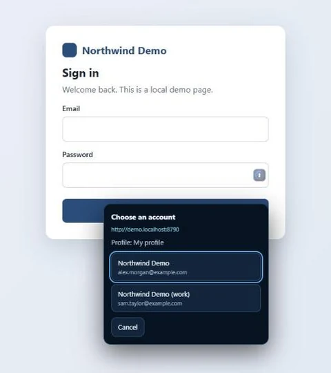

Alles, was es kann, und wo es das tut
All das läuft auf Ihren eigenen Geräten: der Windows-App, der Browser-Erweiterung und der iPhone-App. Free fasst bis zu 7 Einträge; Pro hebt das Limit auf und ergänzt Synchronisierung, Zwei-Faktor-Codes und Dokumente.

Der Tresor
- Verschlüsselt auf Ihrer Festplatte
- Alles, was Sie speichern, wird mit einem durch Ihr Master-Passwort geschützten Schlüssel verschlüsselt, mit Argon2id und AES-256-GCM. Auch Namen, Benutzernamen und Websites sind verschlüsselt, nicht nur Passwörter.
- Mehr als Passwörter
- Logins für Websites und Desktop-Apps, Passkeys, Zahlungskarten, Bankkonten, Identitäten, sichere Notizen, Dokumente, SSH-Schlüssel, API-Schlüssel, WLAN-Netzwerke, Lesezeichen, Software-Lizenzen, Abos, Garantien und Einkäufe, jeweils mit eigenen Feldern.
- Dokumente (Pro)
- Bewahren Sie Dateien wie eingescannte Dokumente im Tresor auf, bis zu 25 MB pro Datei. Jede Datei wird mit einem eigenen Schlüssel verschlüsselt. Sie können ein Dokument in der Vorschau ansehen, eine Kopie speichern oder es in einer anderen App öffnen. Mit der Synchronisierung wandern Dateien, weiterhin verschlüsselt, auf Ihre anderen Geräte.
- Zwei-Faktor-Codes (Pro)
- Speichern Sie den Einrichtungsschlüssel einer Website, und LocalGateKeys zeigt den aktuellen Code oben im Login sowie auf einer Karte „Einmalcodes“ auf der Startseite an. Die Codes folgen dem TOTP-Standard (RFC 6238): 6 bis 8 Ziffern, 15 bis 120 Sekunden, SHA-1, SHA-256 oder SHA-512.
- Codes auf der Apple Watch (Pro)
- Zeigen Sie die Zwei-Faktor-Codes, die Sie auswählen, auf Ihrer Apple Watch an, bis zu 10. Die Uhr zeigt nur Codes, nie Passwörter, und sie funktionieren auch ohne iPhone in der Nähe.
- QR-Code scannen
- Wählen Sie QR-Code scannen und fügen Sie einen Ausschnitt des Zwei-Faktor-QR-Codes der Website ein (Win+Umschalt+S), legen Sie ein Bild ab oder halten Sie ihn vor Ihre Webcam. Auch QR-Codes aus einem Google-Authenticator-Export funktionieren. Das Bild wird auf Ihrem PC gelesen und nie gespeichert.
- Passwortgenerator
- Zufällige Passwörter mit 8 bis 256 Zeichen oder Passphrasen mit 3 bis 16 Wörtern.
- Passwort-Zustand
- Sehen Sie, welche gespeicherten Passwörter schwach, mehrfach verwendet, älter als ein Jahr sind oder keinen Zwei-Faktor-Code haben. Die Prüfung auf Datenlecks bei Have I Been Pwned ist aus, bis Sie sie einschalten, läuft nur, wenn Sie sie starten, und sendet nur fünf Zeichen eines Hashes, nie das Passwort.
- Website-Logos und Typ-Symbole
- Jeder Eintrag zeigt das Symbol der Website, ein eingebautes Logo für bekannte Websites oder ein Symbol für seinen Typ, damit Sie ihn auf einen Blick erkennen.
- Suche, Sortierung und Sammlungen
- Finden Sie Einträge mit einer Befehlspalette (Strg+K), Filterchips, Favoriten und eigenen Sammlungen. Sortieren Sie die Liste nach Titel, Änderungs- oder Erstellungsdatum, Favoriten zuerst. Pfeiltasten, Eingabetaste und Strg+C funktionieren in der Liste direkt aus dem Suchfeld.
- Papierkorb und Rückgängig
- Gelöschte Einträge landen im Papierkorb, und die Meldung, die das bestätigt, hat eine Schaltfläche Rückgängig. Der Papierkorb leert sich nach 30 Tagen von selbst oder behält alles, bis Sie ihn leeren.
- Passwortverlauf
- Wenn sich das Passwort eines Logins ändert, werden bis zu 10 frühere Passwörter ein Jahr lang in seinem verschlüsselten Verlauf aufbewahrt. Kopieren Sie eines oder stellen Sie es wieder her.
- Verifizierte Website
- Die Browser-Erweiterung kennzeichnet eine gespeicherte Website als verifizierte Website und warnt, bevor Sie sich auf einer täuschend ähnlichen Adresse anmelden oder speichern, etwa mit vertauschtem Buchstaben. Die Prüfung läuft auf Ihrem Gerät, und Ihre gespeicherten Websites verlassen die App nie. Safari führt nur eine versiegelte Liste von Website-Namen. Unter Android zeigt die Speicherabfrage des Autofill dasselbe Ergebnis und fragt nach, bevor sie auf einer täuschend ähnlichen Adresse speichert.


Rein und raus
- Import aus anderen Passwortmanagern
- Übernehmen Sie Exporte aus 1Password, Bitwarden, LastPass, Dashlane, Proton Pass, KeePass und KeePassXC (einschließlich
.kdbx-Dateien), Chrome, Edge, Brave, Firefox und Safari oder aus jeder anderen CSV-Datei. Sie prüfen jeden Eintrag, bevor etwas geschrieben wird, und der Import geht nie online. Auf dem iPhone übernehmen Sie Logins, Zwei-Faktor-Codes und Passkeys direkt aus Apple Passwörter (iOS 26 und neuer) oder importieren eine Datei aus vielen Passwortmanagern und Authenticator-Apps. - Export
- Exportieren Sie in eine verschlüsselte KeePass-KDBX-4-Datei, in Bitwarden-kompatibles CSV oder JSON oder in KeePass-XML. Jeder Export fragt zuerst nach Ihrem Master-Passwort.
- Einen Eintrag sicher teilen
- Senden Sie einen Login oder eine Notiz als
.lgkshare-Datei oder QR-Code, gesichert mit einem Code aus sechs Wörtern, den Sie der anderen Person auf anderem Weg mitteilen. Er lässt sich nur einmal öffnen, und drei falsche Codes zerstören ihn. Passkeys, Dokumente und Einträge mit angehängter Datei lassen sich nicht teilen.
Anmeldungen ausfüllen
- Erweiterung für Chrome und Edge
- Füllen Sie Logins auf Websites aus und speichern Sie sie, auch bei Anmeldungen, die Benutzernamen und Passwort auf getrennten Seiten abfragen. Die Erweiterung fragt über einen lokalen Helfer die App auf Ihrem PC nach Logins, die zur exakten Website passen. Sie füllt auch Zwei-Faktor-Codes, Adressen und Zahlungskarten aus.
- Speicherabfragen unter Ihrer Kontrolle
- Nach der Anmeldung bietet die Erweiterung an, einen neuen Login zu speichern oder ein geändertes Passwort zu aktualisieren. Über die Schaltfläche in der Symbolleiste können Sie die Abfrage für jede Website ausschalten.
- Sie starten jedes Ausfüllen
- Nichts wird ausgefüllt, bevor Sie ein Konto wählen. Formulare werden nicht für Sie abgeschickt, es sei denn, Sie schalten in den Einstellungen „Nach dem Ausfüllen anmelden“ ein, und dann nur nach einem Ausfüllen, das Sie gestartet haben.
- Passkeys
- Wenn eine Website in Chrome oder Edge einen Passkey anbietet, kann LocalGateKeys ihn in Ihrem Tresor speichern und Sie damit anmelden. Sie bestätigen jeden Passkey in der Desktop-App, mit Windows Hello oder Ihrem Master-Passwort, und der eigene Passkey-Dialog des Browsers ist immer einen Klick entfernt. Der private Schlüssel verlässt die App nie.
- Ausfüllen in Windows-Apps
- Füllen Sie Anmeldefenster von Windows-Programmen mit einer Ausfüllschaltfläche neben dem Passwortfeld oder per Tastenkombination (Strg+Umschalt+Leertaste). Jede App wird einmal verknüpft, und das Ausfüllen wird abgelehnt, wenn sich das Programm, sein Fenster oder seine Felder seitdem geändert haben.
- Schnellzugriff
- Durchsuchen Sie Ihren Tresor und kopieren Sie von überall per Tastenkombination (standardmäßig Strg+Alt+K). Strg+Alt+L sperrt den Tresor sofort.
- Niemals Keylogging
- LocalGateKeys installiert keinen Tastatur-Hook, liest keine Bildschirminhalte, um Passwörter zu finden, und schleust nichts in andere Programme ein. Stellt eine App keine richtigen Anmeldefelder bereit, wird sie nicht ausgefüllt.

Entsperren
- Master-Passwort
- Mindestens 12 Zeichen, nie auf die Festplatte geschrieben. Es ist das Einzige, was Ihren Tresor öffnet, und wir können es nicht zurücksetzen.
- Windows Hello
- Entsperren Sie mit Fingerabdruck, Gesicht oder PIN über Windows Hello, nachdem Sie es in LocalGateKeys eingerichtet haben.
- Kameraprüfung
- Eine optionale Gesichtsprüfung per Webcam für PCs ohne Windows Hello. Sie ist eine Komfortfunktion, kein zertifizierter Schutz vor Täuschung; bevorzugen Sie Windows Hello, wenn möglich.
- Wiederherstellungsphrase
- Eine optionale Phrase aus 24 Wörtern, die den Tresor öffnen kann, wenn Sie das Master-Passwort vergessen. Sie wird einmal angezeigt und nie von der App gespeichert.
- Automatisches Sperren und Löschen der Zwischenablage
- Der Tresor sperrt sich nach einer von Ihnen gewählten Zeit, und kopierte Passwörter werden aus der Zwischenablage gelöscht. Es wird nur gelöscht, was LocalGateKeys kopiert hat.
Backups
- Geplante verschlüsselte Backups
- Täglich oder wöchentlich, zu einer von Ihnen festgelegten Zeit. Jedes Backup ist eine vollständige verschlüsselte Datei, die nach dem Schreiben geprüft wird, einschließlich Anhängen.
- Zusätzliche Kopie in einem Ordner Ihrer Wahl
- Lassen Sie jedes Backup in einen Ordner von OneDrive, Google Drive, Dropbox oder Proton Drive kopieren, oder an einen beliebigen anderen Ort. Es werden nur verschlüsselte Backup-Dateien kopiert, nie der aktive Tresor.
- Verschlüsselte Übertragungspakete
- Verschieben Sie ausgewählte Einträge in einer verschlüsselten Datei, die durch ein eigenes Passwort geschützt ist, in einen anderen Tresor.
- Handy-Backups
- Die iPhone- und Android-App speichern eine verschlüsseltes .lgkm-Backup mit einem Passwort Ihrer Wahl. Stellen Sie es auf jedem iPhone, Android-Handy, Mac oder PC wieder her: Es wird wie bei der Synchronisierung zusammengeführt und löscht Ihren Tresor nie.
Notfallzugriff und Zwangspasswort (Pro)
- Notfallzugriff
- Teilen Sie Ihre Wiederherstellungsphrase in bis zu fünf Teile für Menschen, denen Sie vertrauen. Eine von Ihnen gewählte Anzahl (zwei bis fünf) davon genügt zum Zugriff. Jeder erhält eine signierte Datei, einen QR-Code oder ein gedrucktes Blatt. Es gibt kein Konto und keinen Server: Sie teilen mit ihnen einen Ordner, etwa einen Cloud-Ordner oder einen USB-Stick.
- Wartezeit und Veto
- Wer Zugriff braucht, fragt in der eigenen LocalGateKeys-App an. Nach der von Ihnen gewählten Wartezeit (1 bis 30 Tage) öffnet die App eine Kopie Ihres neuesten verschlüsselten Backups. Bis dahin kann jedes Ihrer Geräte Nein sagen. Sie können den Zugriff auch sofort erlauben. Auf dem Telefon endet der Ablauf mit der Anzeige Ihrer Wiederherstellungsphrase; öffnen Sie das Backup an einem Computer.
- Die Grenze
- Außerhalb der Apps erzwingt nichts die Wartezeit oder Ihr Nein. Jede Gruppe von Inhabern mit genug Teilen kann gemeinsam Ihr Backup sofort öffnen. Wählen Sie Menschen, die nicht zusammen handeln würden, und bewahren Sie die Teile getrennt auf. Wenn Sie Ihre Wiederherstellungsphrase ersetzen, sind alte Teile wertlos.
- Zwangspasswort
- Ein zweites Passwort öffnet einen glaubwürdigen Tresor mit Beispieleinträgen und verrät nichts über Ihren echten. Solange er offen ist, bleibt der echte Tresor für die gewählte Zahl Stunden gesperrt, und nichts wird synchronisiert. Das verbirgt Ihren Tresor vor jemandem, der Ihnen über die Schulter schaut oder Sie zwingt, die App zu öffnen. Es verbirgt nicht, dass die Funktion existiert, wenn jemand Ihre Dateien untersucht. Auf Windows, Mac, iPhone und Android.
Werkzeuge für Fortgeschrittene
- Wiederherstellungstest für Backups
- Einmal pro Woche stellt LocalGateKeys Ihr neuestes Backup in einem temporären Ordner wieder her, prüft, ob es sich öffnen lässt, und löscht die Kopie. Es meldet Ihnen, wenn das Backup ein altes Passwort verwendet.
- Assistent für Passwortänderungen
- Öffnet die Seite, auf der Sie das Passwort einer Website ändern: aus einer kuratierten Liste, über die Standardadresse /.well-known/change-password oder über die Anmeldeseite. Fremde Websites füllt er nie aus.
- Mehrere Tresore (Pro)
- Führen Sie getrennte Tresore, etwa Arbeit und Privat. Der kostenlose Tarif enthält einen Tresor. Die Grenze von 7 kostenlosen Einträgen gilt für alle Tresore zusammen.
- Druckbarer Tresor-Gesundheitsbericht
- Ein einseitiger Bericht zum Ausdrucken. Er enthält keine Passwörter und keine Eintragsnamen.
- Ablaufende und widerrufbare Freigaben
- Freigaben können nach 1 Stunde oder 1 Tag ablaufen, nur einmal nutzbar sein und widerrufen werden. Das geschieht nach bestem Bemühen.
- Vorlage für das Nachlasspaket
- Eine Vorlage für Nachlassverwalter, neben dem Notfallzugriff.
Für Entwickler und KI-Agenten
- KI-Agenten melden sich an, Ihre Passwörter bleiben auf Ihrem PC (Pro)
- Claude Code und andere MCP-Agenten können LocalGateKeys bitten, sich bei einer Website anzumelden. Sie bestätigen jede Anfrage, die Browsererweiterung füllt das Formular aus, und der Agent sieht das Passwort nie. Unter Windows: claude mcp add localgatekeys -- LocalGateKeysNativeHost.exe mcp (die Microsoft-Store-App führt die lgk-Befehlszeile auch als LocalGateKeysNativeHost.exe lgk aus). KI-Agenten melden sich an, Ihre Passwörter bleiben auf Ihrem PC
- Manipulationssicheres Zugriffsprotokoll
- Jeder Aktivitätseintrag ist über einen Hash mit dem vorherigen verknüpft, daher zeigt die Sicherheitsprüfung, wenn das Protokoll geändert, gekürzt oder geleert wurde.
Synchronisierung zwischen Ihren Geräten (Pro)
- Über Ihr WLAN zu Hause
- Koppeln Sie einen PC oder ein iPhone einmal mit einem Einmal-QR-Code (zwischen PCs fügen Sie dessen Text ein). Sind beide im selben Netzwerk entsperrt, tauschen sie Änderungen direkt über eine authentifizierte, verschlüsselte Verbindung aus. Nichts läuft über das Internet. Ändert sich die Adresse eines PCs, verbindet Erneut suchen wieder, und jedes Gerät zeigt, wann es zuletzt synchronisiert hat.
- Über Ihren eigenen Cloud-Ordner
- Wenn Ihre Geräte selten im selben Netzwerk sind, synchronisieren Sie über einen Cloud-Ordner, den Sie bereits nutzen, etwa Dropbox oder iCloud Drive, geschützt durch ein Sync-Passwort. Der Anbieter speichert immer nur verschlüsselte Dateien. Sie können beide Wege nutzen.
- Was synchronisiert wird
- Logins, Notizen, Karten und Ihre anderen Einträge sowie angehängte Dokumente mit ihren Dateien. Sammlungen bleiben auf jedem Gerät. Bei Änderungen auf zwei Geräten gleichzeitig bleiben beide Versionen erhalten, und ein Löschen verschiebt den Eintrag auf den anderen Geräten in den Papierkorb. Bringt ein Gerät eine ältere Kopie des Tresors zurück, warnt die Windows-App Sie, statt sie zu übernehmen.
- iPhone
- Die iPhone-App synchronisiert mit Ihrem Windows-PC und Mac. Ein kostenloser PC, der mit einem iPhone mit Pro gekoppelt ist, übernimmt die Lizenz per Synchronisierung und wird zu Pro. Im App Store laden.
Auf dem iPhone
- AutoFill in Safari und Apps
- Füllen Sie Logins in Safari und anderen Apps aus, mit Vorschlägen in der QuickType-Leiste, und nutzen Sie LocalGateKeys für Passkeys. Ab iOS 18 füllt die App in jedem Textfeld auch Karten, Adressen und weitere Angaben aus. Die Safari-Erweiterung bietet an, einen neuen Login nach der Anmeldung zu speichern.
- Face ID, Touch ID oder ein App-Passwort
- Der Tresor öffnet sich mit Face ID, Touch ID oder dem Code Ihres iPhone, ohne dass ein Passwort erstellt werden muss. Wenn andere Ihren Code kennen, fügen Sie ein optionales App-Passwort hinzu, abgesichert durch eine Wiederherstellungsphrase aus 24 Wörtern.
- Sicherheitsprüfung
- Der Tab Sicherheit gibt Ihrem Tresor eine Bewertung und listet schwache, mehrfach verwendete und alte Passwörter sowie Logins auf, die Zwei-Faktor-Codes nutzen könnten. Prüfungen auf Datenlecks bleiben aus, bis Sie sie einschalten.
- Zuletzt gelöscht, Verlauf und Erinnerungen
- Gelöschte Einträge warten 30 Tage unter Zuletzt gelöscht, und Widerrufen holt einen sofort zurück. Jeder Login behält seinen Passwortverlauf, und Sie können sich erinnern lassen, bevor eine Karte, ein Reisepass oder eine Lizenz abläuft.
- Angehängte Dateien (Pro)
- Hängen Sie Dokumente und Fotos an Ihren Tresor an, verschlüsselt gespeichert und mit Ihren anderen Geräten synchronisiert.
- Zehn Sprachen
- Die iPhone-App spricht Englisch, Deutsch, Spanisch, Italienisch, Japanisch, Koreanisch, Niederländisch, Polnisch, brasilianisches Portugiesisch und vereinfachtes Chinesisch.
Datenschutz
- Kein Konto
- Sie registrieren oder melden sich nie an. Eine Pro-Lizenz ist ein Schlüssel, den Sie behalten und der auf Ihrem Gerät geprüft wird. Auf dem iPhone ist Pro ein Kauf im App Store, und die App sendet nur den App-Store-Beleg an unseren Lizenzserver.
- Keine Telemetrie
- Die Apps senden keine Nutzungsdaten, Absturzberichte oder Analysen.
- Strenger Offline-Modus
- Standardmäßig an. Er blockiert Internetanfragen im Hintergrund und Prüfungen auf Datenlecks, und vor einer Update-Prüfung wird zuerst gefragt.
- Website-Symbole, Ihre Entscheidung
- Um das Symbol einer Website anzuzeigen, lädt die App es von dieser Website herunter. Dadurch erfährt die Website, dass Sie dort ein Konto haben, und nichts weiter. Standardmäßig ist das aus: Schalten Sie in den Einstellungen „Website-Symbole anzeigen“ ein (der strenge Offline-Modus muss aus sein).
- Update-Prüfungen, die Sie starten
- Die Update-Prüfung lädt eine kleine signierte Datei herunter. Die App lädt oder installiert nie etwas von selbst.